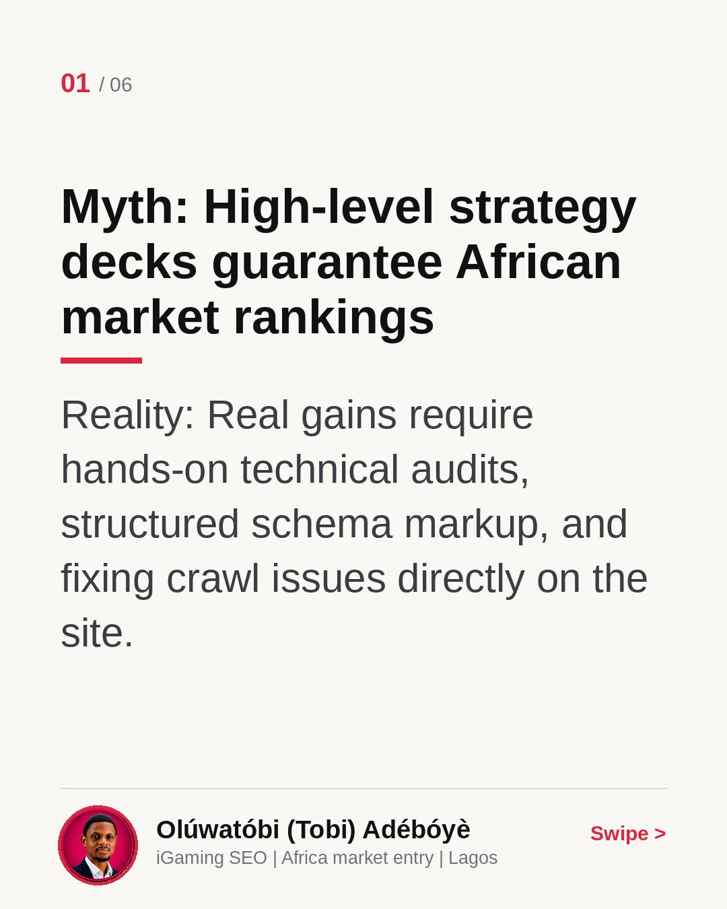
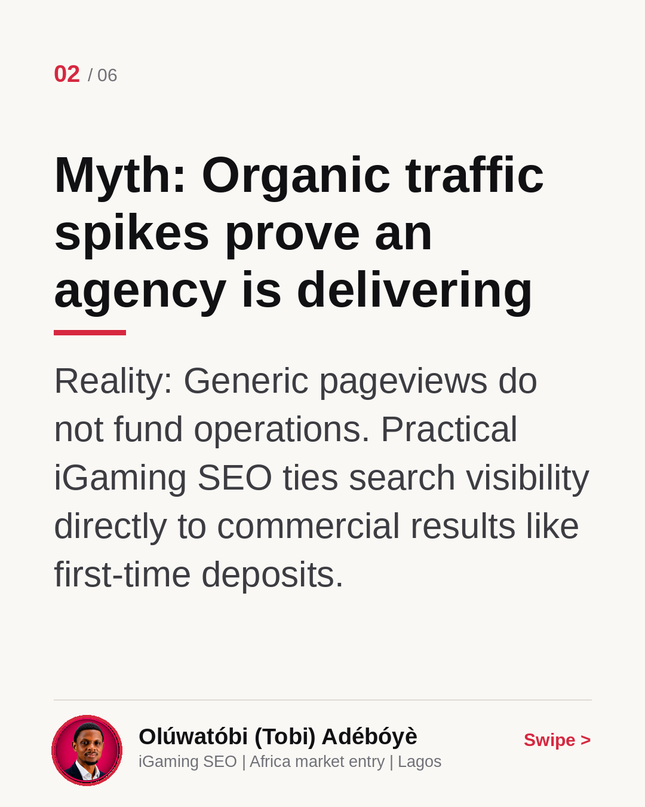
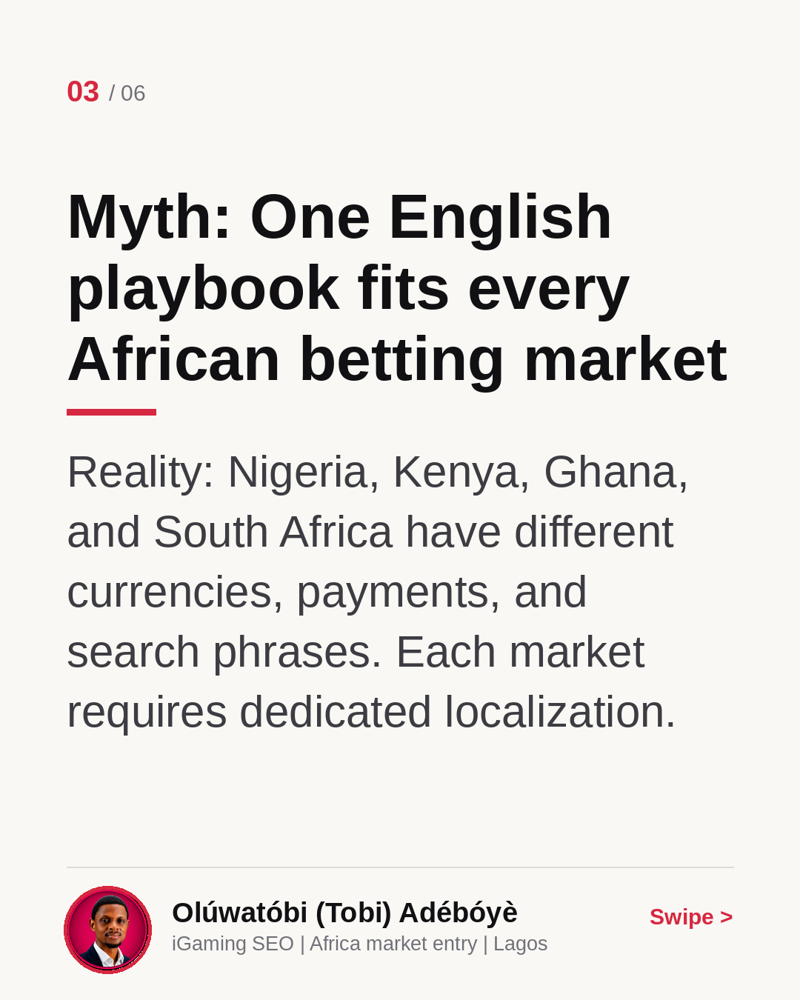
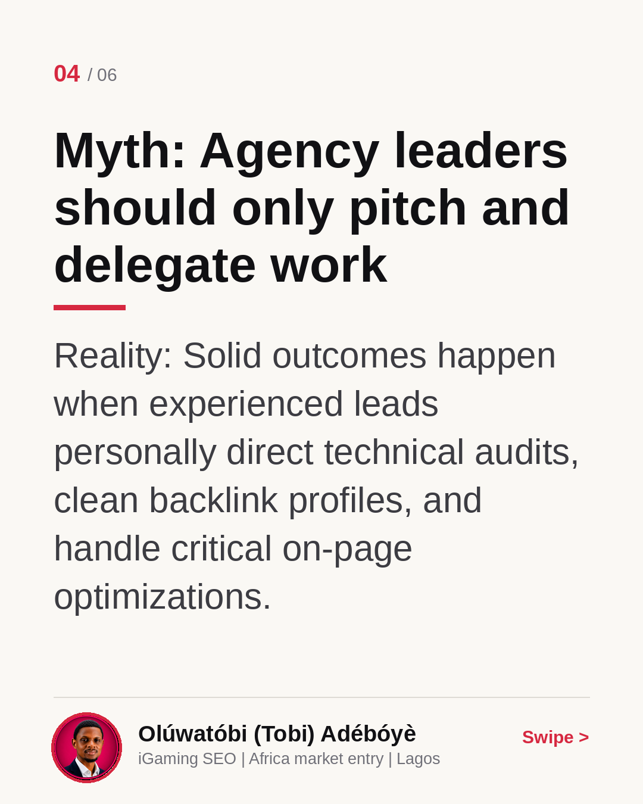
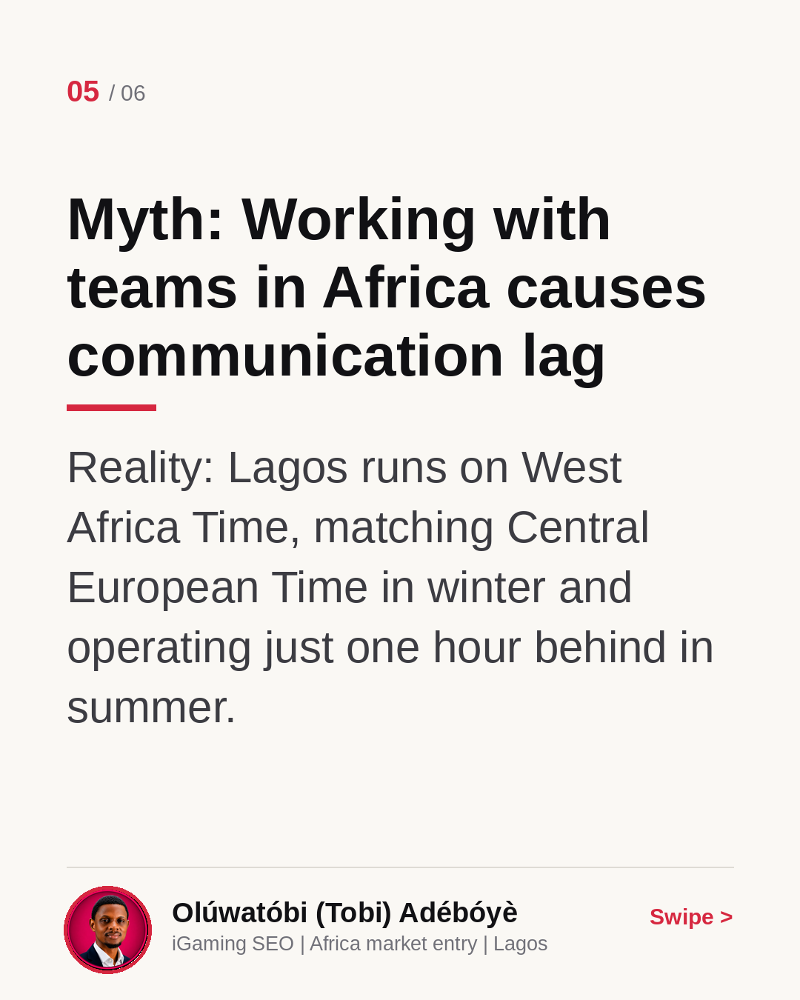
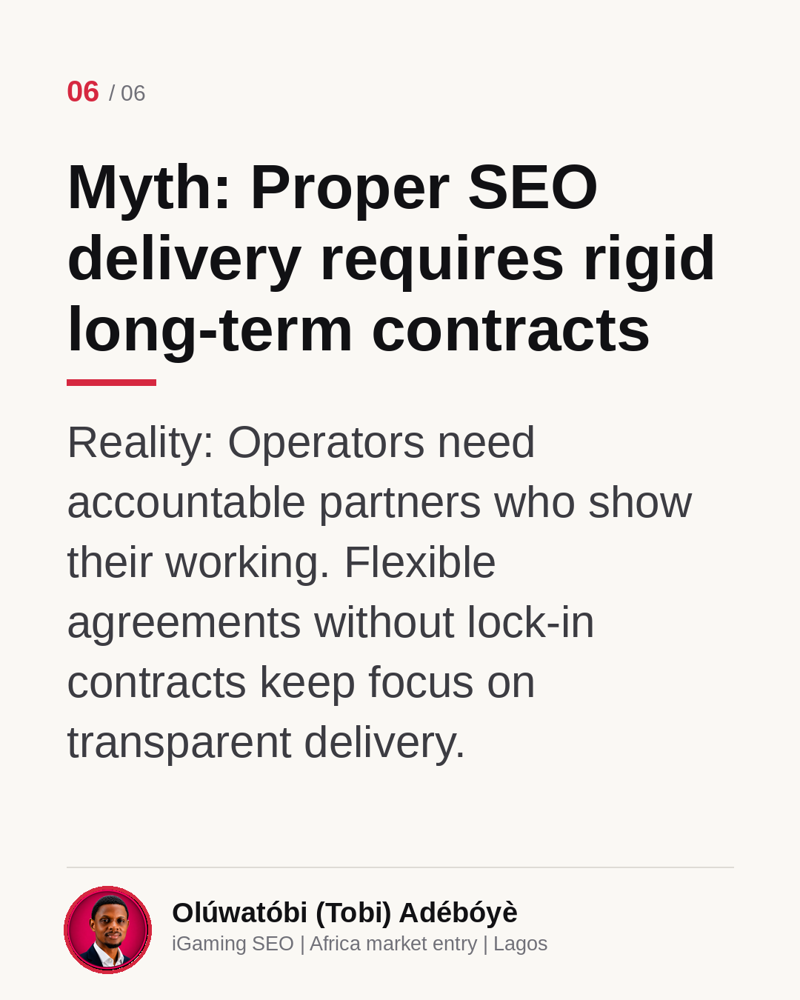

Africa iGaming SEO: Myths vs Reality
Entering the African iGaming market takes more than high-level presentations and vague promises. In this carousel, I break down six common myths European operators encounter when assessing search visibility and technical SEO across the continent. Real traction comes from showing the working: hands-on audits, localized content, and measuring outcomes like first-time deposits. Which of these myths have you run into most often?
Myth: High-level strategy decks guarantee African market rankings
Reality: Real gains require hands-on technical audits, structured schema markup, and fixing crawl issues directly on the site.

Myth: Organic traffic spikes prove an agency is delivering
Reality: Generic pageviews do not fund operations. Practical iGaming SEO ties search visibility directly to commercial results like first-time deposits.

Myth: One English playbook fits every African betting market
Reality: Nigeria, Kenya, Ghana, and South Africa have different currencies, payments, and search phrases. Each market requires dedicated localization.

Myth: Agency leaders should only pitch and delegate work
Reality: Solid outcomes happen when experienced leads personally direct technical audits, clean backlink profiles, and handle critical on-page optimizations.

Myth: Working with teams in Africa causes communication lag
Reality: Lagos runs on West Africa Time, matching Central European Time in winter and operating just one hour behind in summer.

Myth: Proper SEO delivery requires rigid long-term contracts
Reality: Operators need accountable partners who show their working. Flexible agreements without lock-in contracts keep focus on transparent delivery.
